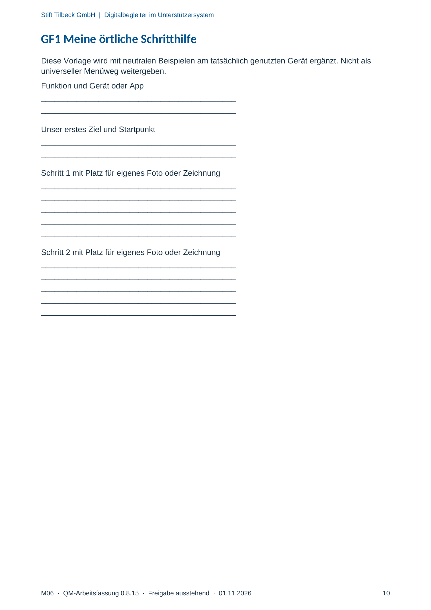
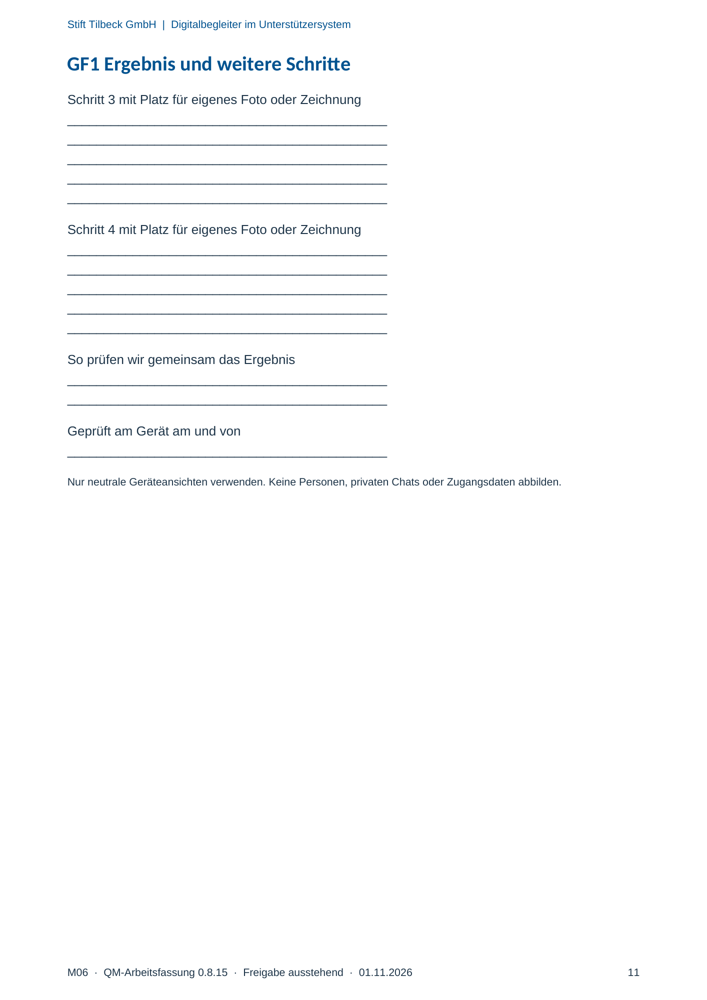

M06 · Originalseite 10, 11
Meine örtliche Schritthilfe
Gezielte Original-Druckauswahl.
Fragen und Ankreuzfelder werden auf dem Ausdruck bearbeitet. Die Lesefassung speichert keine Antworten.
Lesefassung · Seite 10
Stift Tilbeck GmbH | Digitalbegleiter im Unterstützersystem
M06 · QM-Arbeitsfassung 0.8.15 · Freigabe ausstehend · 01.11.2026 10
GF1 Meine örtliche Schritthilfe
Diese Vorlage wird mit neutralen Beispielen am tatsächlich genutzten Gerät ergänzt. Nicht als
universeller Menüweg weitergeben.
Funktion und Gerät oder App
Antwortbereich auf dem Ausdruck
Unser erstes Ziel und Startpunkt
Antwortbereich auf dem Ausdruck
Schritt 1 mit Platz für eigenes Foto oder Zeichnung
Antwortbereich auf dem Ausdruck
Schritt 2 mit Platz für eigenes Foto oder Zeichnung
Antwortbereich auf dem Ausdruck
Originalseite ansehen

Lesefassung · Seite 11
Stift Tilbeck GmbH | Digitalbegleiter im Unterstützersystem
M06 · QM-Arbeitsfassung 0.8.15 · Freigabe ausstehend · 01.11.2026 11
GF1 Ergebnis und weitere Schritte
Schritt 3 mit Platz für eigenes Foto oder Zeichnung
Antwortbereich auf dem Ausdruck
Schritt 4 mit Platz für eigenes Foto oder Zeichnung
Antwortbereich auf dem Ausdruck
So prüfen wir gemeinsam das Ergebnis
Antwortbereich auf dem Ausdruck
Geprüft am Gerät am und von
Antwortbereich auf dem Ausdruck
Nur neutrale Geräteansichten verwenden. Keine Personen, privaten Chats oder Zugangsdaten abbilden.
Originalseite ansehen
